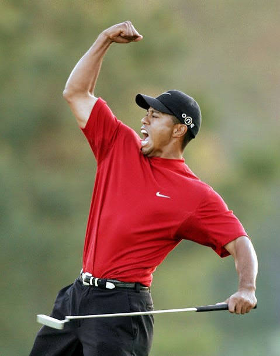
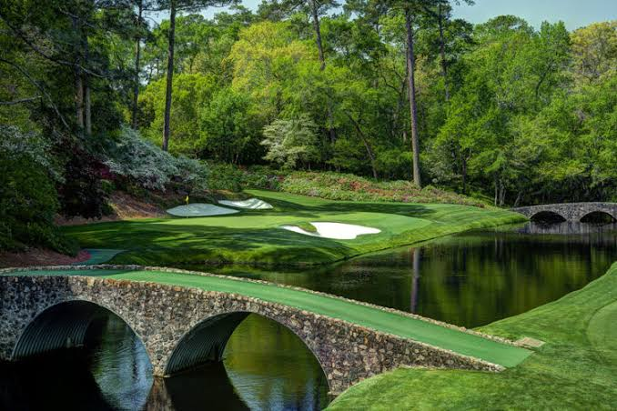
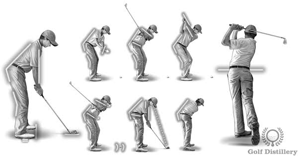

What Is Golf?
Golf is a sport where players use different clubs to hit a ball into a series of holes in as few strokes as possible.
A typical golf course consists of 18 holes. Each hole has a tee box, fairway, and putting green. Players must navigate obstacles such as trees, bunkers, and water hazards.
What Makes Golf Interesting?
Golf combines physical skill, mental strategy, patience, and competition. Every round presents new challenges and opportunities to improve.
Who Plays Golf?
Golf is played by people of different ages and skill levels, from beginners to professionals. It is a sport that can be enjoyed throughout life.
My name is Aiden Orr, and golf is one of my favorite hobbies. I enjoy improving my swing, playing rounds with friends, and challenging myself to shoot lower scores.
Professional Golf
Professional golfers compete in tournaments around the world. Some well-known golfers include Tiger Woods, Rory McIlroy, and Scottie Scheffler.

When Is the Best Time to Golf?
Golf can be played throughout much of the year, depending on the weather and location. Spring and fall are often my favorite seasons because the temperatures are comfortable.
Morning Golf
Morning tee times usually offer cooler weather and can be a great way to start the day.
Afternoon Golf
Afternoon rounds are convenient after school or work. Playing nine holes is a good option when time is limited.
Where Can You Play Golf?
Golf can be played at public courses, private clubs, and smaller par-three courses. Each offers a different experience.
Golf Courses
Full-length courses are ideal for playing complete rounds and improving course management.
Driving Ranges
Driving ranges allow golfers to practice their swings and test different clubs without playing an entire round.
Putting greens and short-game practice areas are also excellent places to work on scoring.

How Do You Play Golf?
Golf begins by placing a ball on the teeing area and hitting it toward the hole. Players continue hitting the ball until it goes into the cup.
Basic Steps
- Choose the appropriate golf club.
- Take a balanced stance and grip the club.
- Make a controlled swing and strike the ball.
- Continue playing until the ball enters the hole.
- Record the number of strokes taken.
Beginner Advice
Start with shorter swings and focus on consistent contact rather than distance. Practice putting and chipping regularly.

Why Do I Enjoy Golf?
Golf is one of my favorite hobbies because it constantly challenges me to improve. Every round is an opportunity to learn.
Competition
I enjoy competing against friends and trying to beat my previous scores.
Being Outdoors
Golf provides an opportunity to spend time outside, relax, and enjoy nature.
My favorite part of golf is seeing progress. Hitting a great shot or making a difficult putt makes the practice worthwhile.

AI prompt: Create an original scenic illustration of a peaceful golf course.
AI Prompts Used
AI assistance was used to help create the HTML structure, CSS styling, JavaScript navigation, and written content.
Website Structure Prompt
Create a golf hobby website using HTML with separate sections for Who, What, When, Where, How, Why, and AI Prompts.
CSS Prompt
Style the golf website using an embedded stylesheet, CRAP design principles, responsive layout, and a unique color scheme.
JavaScript Prompt
Create JavaScript navigation that shows only the selected section and displays the What section by default.
Image Prompt
Create a Favicon that utilizes the colors of my project, has a hole, sun, flag, and hills.
AI prompt: Design an original lightweight golf-themed SVG illustration with coordinated colors.